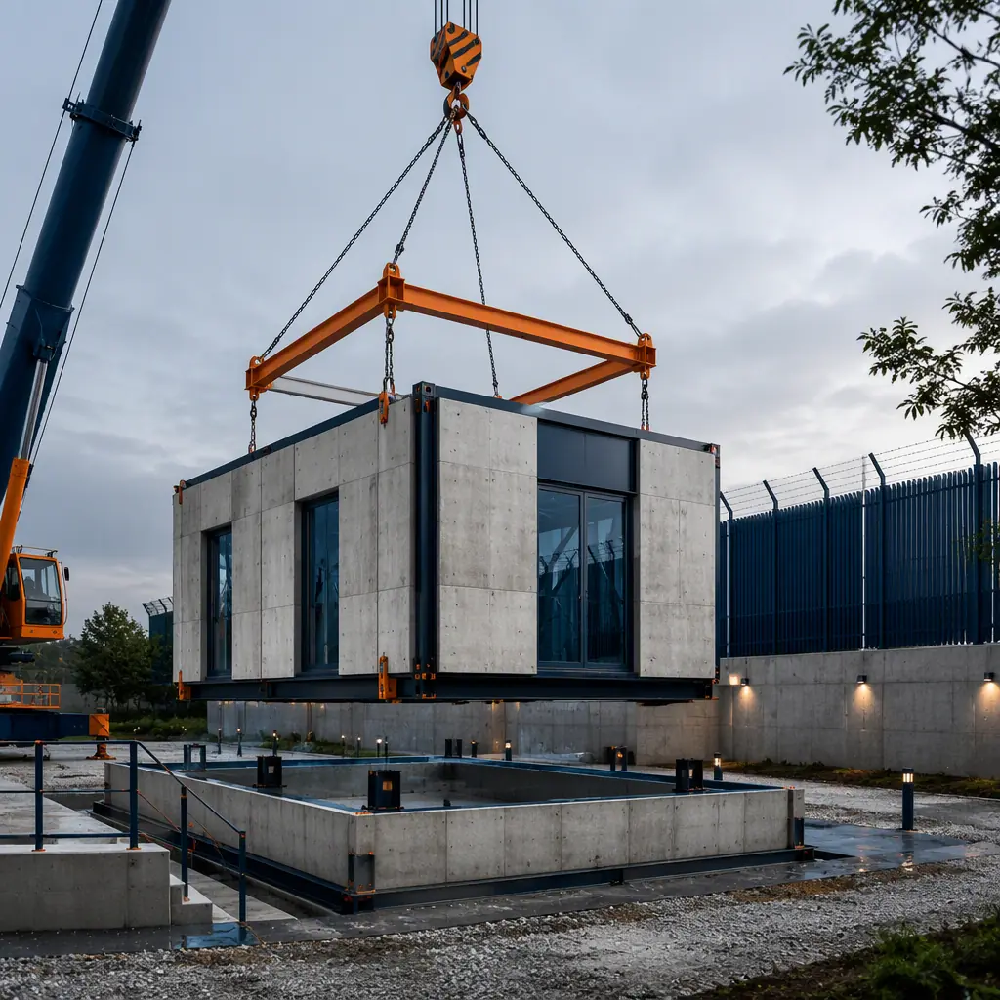
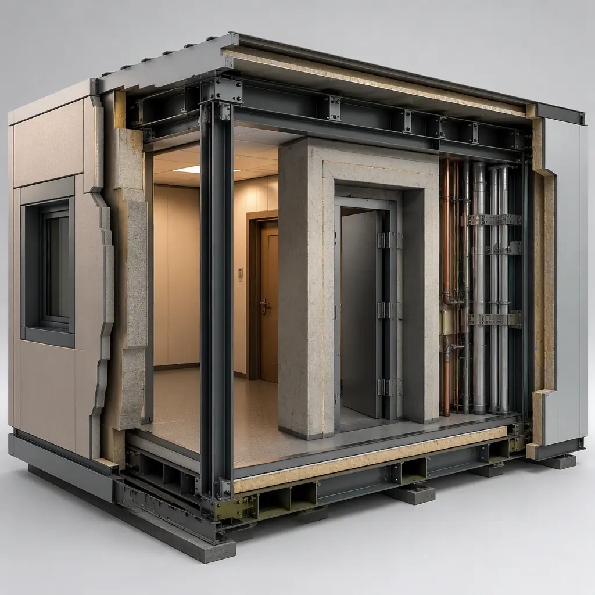
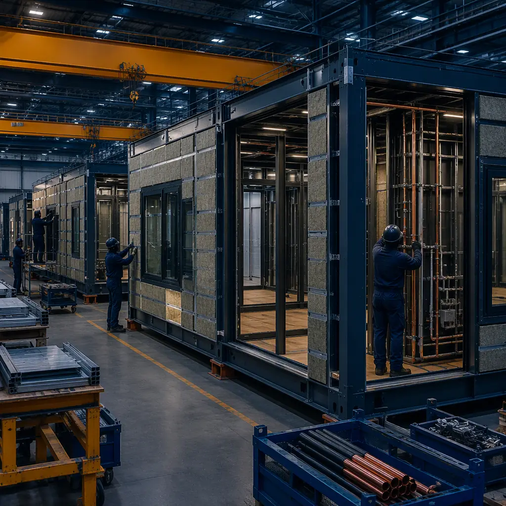

An embassy or consulate is a government building with the most demanding security program in civilian construction. Beyond the chancery offices and consular waiting halls that the public sees, a modern diplomatic compound layers on a hardened envelope, blast-resistant structure, secure circulation, redundant power and communications, and antiterrorism setback and access requirements that most building types never touch. Foreign ministries and diplomatic services agencies maintain hundreds of properties worldwide, and their procurement reality is unforgiving: security standards change, host-country conditions shift, and a new chancery can take 5–10 years to plan and deliver through conventional design-bid-build. Modular construction compresses that to a 20–36 week factory production cycle with a 6–10 week site set, because the hardened envelope, blast-resistant frame, and secure MEP systems are engineered into factory-built modules where they can be tested and certified before shipment. This guide explains the diplomatic facility building program, how modular delivery satisfies security, blast, and resilience requirements, and what foreign ministries and diplomatic agencies should specify before they build.

Why Diplomatic Services Are Going Modular
Three factors push diplomatic facility delivery toward factory production. First, security requirements are documented, repeatable, and increasingly standardized — agencies specify the same hardened envelope, blast standoff, and secure circulation package across dozens of posts, and repetition is what factory production does best. Second, the schedule is a political and operational asset: a chancery that opens in two years instead of six allows a foreign ministry to establish presence, deliver consular services, and respond to changing bilateral relations on a timeline that matches the diplomatic agenda. Third, the risk is concentrated in a few systems: blast resistance, envelope hardening, secure power and communications, and perimeter integration. All four are dramatically more reliable when factory-built, tested, and certified than when assembled by site trades under security-sensitive conditions. The quality-gate discipline that makes factory testing reliable — documented inspections at every stage of production — is the same system MODURA applies across building types, covered in our factory quality control guide.
Modular delivery also fits the way diplomatic portfolios actually operate: posts open, expand, and consolidate as bilateral relations evolve, and factory-built compounds can be delivered in phases — chancery first, staff housing and support buildings later — without stranding a partially built site. The same structural logic that makes hardened modules feasible is documented in our modular blast-resistant construction guide and, for the broader government context, our modular government and municipal buildings guide.
The Diplomatic Compound Program: Zones, Hardening, and Support
A diplomatic compound is a layered building: public functions at the perimeter, controlled functions in the middle, and protected functions at the core. A typical chancery of 40,000–150,000 sq ft breaks down as follows:
- Consular and public zone (25–35% of floor area). Waiting halls, visa and passport counters, and public interview rooms — separated from the rest of the building by a hardened security envelope with controlled access points.
- Chancery and administrative zone (35–45%). Offices, conference rooms, and the ambassador's and senior staff suites, with secure circulation corridors that keep the public zone and the staff zone physically separate.
- Protected core. The communications room, secure records, and emergency operations space — the most hardened spaces in the building, with redundant power, dedicated cooling, and ballistic-rated construction.
- Perimeter and support. Vehicle screening, guard posts, staff support, and the mechanical plant — designed to meet antiterrorism setback, access, and standoff requirements.
Every element maps onto factory production. The hardened envelope is built as factory modules with the ballistic and blast-rated assemblies installed and verified; the protected core arrives as a pre-fitted, pre-cabled module with its redundant systems in place; and the consular zone is pre-wired for the queuing, screening, and records systems it will run. The security and resilience engineering that carries these systems — structure, envelope, MEP — follows the same factory-integrated approach documented in our modular MEP systems integration guide.

Blast Resistance and the Hardened Envelope
The defining technical requirement of a diplomatic facility is the hardened envelope: the exterior assembly must resist the blast and ballistic threats defined by the agency's security standards. Modern standards specify blast-resistant facades that survive a defined charge at a defined standoff distance, with glazing that fragments safely and wall assemblies that limit debris. The structural response is carried by a ductile steel frame with moment connections — the same family of systems used in seismic design, because both blast and earthquake demand energy absorption rather than brute strength. Factory-built modules deliver this predictably: the frame connections are welded and inspected in the factory, the facade panels are fabricated to verified blast ratings, and the complete module can be proof-tested before shipment. The engineering logic of ductile steel frames is documented in our modular seismic design guide, and the full threat-resistance treatment is in our blast-resistant construction guide.
The envelope also carries ballistic requirements: secure rooms and the protected core are specified with ballistic-rated walls, doors, and glazing, all of which are factory-installed with certified ratings rather than field-assembled with unverified assemblies. The same factory-controlled approach to security assemblies is used in the hardened facilities MODURA delivers for defense and security clients, documented in our modular military and defense infrastructure guide.
Secure Power, Communications, and the Protected Core
A diplomatic facility must remain operational when the surrounding grid does not: secure power with N+1 redundancy, generator capacity for the full critical load, and uninterruptible power for the communications core. The secure core also demands physical separation of critical risers and the ability to run on islanded power during grid events — both engineered and tested in the factory. The protected core typically carries a UPS-backed feed, a dedicated generator, and hardened communications risers with physical separation from the public systems. The mechanical design follows the same logic — the secure core gets dedicated cooling and filtration, and the public zone operates on a separate HVAC system so a perimeter incident cannot compromise the protected spaces.
Factory-built compounds engineer this in rather than commissioning it in the field. The switchgear, generator interface, UPS systems, and hardened risers are installed in the modules and load-tested before shipment; the protected core arrives pre-fitted and pre-cabled so on-site cutover is a matter of connecting factory-tested assemblies. The same infrastructure-first design logic applies to any building whose value depends on continuous uptime, which is why the power and cooling approach overlaps with our modular data center construction guide.
Factory Production and the 20–36 Week Schedule
The compound is built indoors because security quality is controlled indoors. The hardened envelope panels are fabricated with verified blast ratings, the secure core is assembled with its redundant systems pre-installed, and the complete module is inspected at defined production gates — the same discipline of weld verification, dimensional checks, and MEP testing that MODURA documents in our factory quality control guide. Factory production also protects the security program itself: a compound built in a controlled facility avoids the long exposure of an open construction site and lets security-sensitive assemblies be installed and verified away from prying eyes, then delivered as finished modules.
On site, the set is measured in weeks, not seasons: the hardened foundation and perimeter infrastructure are prepared in parallel with factory production, and the modules are set, joined, and interconnected over a 6–10 week window, followed by security-system commissioning, blast and ballistic verification, and occupancy inspection. The full schedule comparison of factory-built versus conventional delivery is in our modular construction timeline analysis.

Cost Benchmarks for Diplomatic Facilities
Diplomatic facility economics are dominated by the security program: the hardened envelope, blast-resistant structure, and secure MEP together account for 30–50% of total project cost, which is why the factory-integrated approach of modular delivery has such a large impact. For a mid-size chancery of roughly 60,000 sq ft, modular delivery lands at $450–700 per sq ft complete — or $27–42 million fully built — compared with $550–900 per sq ft for equivalent site-built construction. The 20–35% saving comes from factory labor efficiency, compressed schedule, and the elimination of security-sensitive field-coordination risk.
| Benchmark | Site-Built Compound | Modular Compound |
|---|---|---|
| Planning through occupancy | 5–10 years | 2–4 years |
| Building cost (60,000 sq ft chancery) | $550–900 / sq ft | $450–700 / sq ft |
| Hardened envelope | Field-assembled, verified on site | Factory-fabricated, pre-certified |
| Secure core systems | Field-installed, commissioned on site | Factory-installed, pre-load-tested |
| On-site set window | N/A (sequential trades) | 6–10 weeks |
| Phased portfolio delivery | Each post a unique build | Repeatable hardened modules |
For foreign ministries, the economics compound across a property portfolio: standardized hardened modules mean volume procurement of blast-rated assemblies, faster security clearances of factory production, and predictable maintenance across dozens of posts. Agencies should structure procurement around performance — committed occupancy date, certified blast and ballistic ratings, documented secure-system testing — using the framework in our modular RFP and procurement guide. Per-square-foot benchmarks across building types are in our modular construction cost guide, and total lifecycle economics are covered in our total cost planning guide.
A diplomatic facility fails on security, not walls: the blast-rated envelope, the ballistic-protected core, and the redundant power and communications. Factory production is the only delivery method where those systems are built, tested, and certified as one integrated compound — before it ever reaches the site.
Compliance, Security Standards, and the Business Case
Diplomatic facilities carry the heaviest compliance load in government construction: agency-specific security standards for the envelope and standoff, host-country building codes and zoning, diplomatic agreement requirements, and fire and life-safety codes for the occupancy. Diplomatic projects also involve host-country coordination that conventional schedules absorb poorly: building permits, customs clearance for security equipment, and local labor requirements all run on host-country timelines, and a compressed modular schedule concentrates that exposure into a shorter, better-managed window. The approval sequence for factory-built structures is covered in our permitting and zoning guide, and fire-resistance requirements for the occupancy are covered in our modular fire safety guide.
On the business side, the case for modular diplomatic facilities is the case for modular government building generally — predictable cost, compressed schedule, and repeatable quality — applied to the most security-demanding program there is. Most diplomatic posts are compound programs rather than single buildings: in addition to the chancery, the program typically includes staff housing, a security guard post, vehicle screening, and support buildings. Modular delivery shines for these secondary structures because they share the same factory production line and quality gates as the chancery itself, at a fraction of the cost and schedule of a separate site-built procurement. The phased model also lets an agency open the chancery first — establishing diplomatic presence and consular services — and add staff housing and annex buildings as the post grows, with each phase following the same hardened-envelope standards. The multi-building compound logic is documented in our modular defense infrastructure guide, which covers mixed-building programs of this kind. The same delivery logic serves the wider government and judicial portfolio, from courthouses and judicial facilities to municipal and civic buildings. Whichever path applies, the key is to specify the security program first — blast standoff, ballistic ratings, secure core requirements — and let the factory build the compound around them.